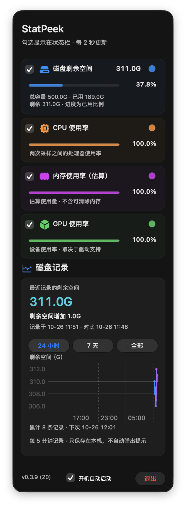
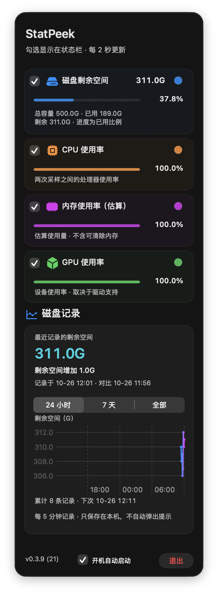

历史范围 Segment
0.3.9 (20) → 0.3.9 (21) · 2026-10-26
将三个独立按钮合并为一个等宽、单选的原生分段控件。位置、文案及筛选逻辑保留。独立原生窗口截图使用合成数据，无滤镜；自动切换并验证刷新保留选中段，不操作用户鼠标键盘。
调整前 · 三个独立按钮
调整后 · 单个 Segment
调整后 top / middle / bottom 状态分别选择 24 小时 / 7 天 / 全部，覆盖三段切换；图表随范围更新，所以与前图的数据走势显示可能不同。浅深色、四档高度共 20 个状态。安装回执 · 完整测量